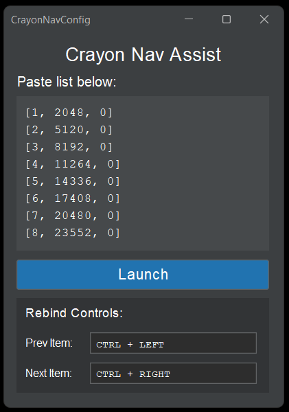
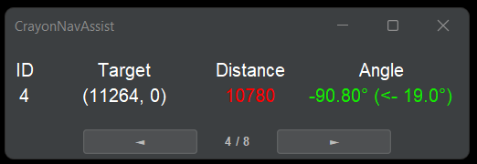

How to use it
- Download the latest
.jarand open it. You need Java 17 or newer. - Find a stronghold in each ring using the eight default coordinates.
- Put your results into CrayonAllPortals to get your route.
- Paste the route in and click Launch.
- Press F3+C in game whenever you want the distance and angle updated.
The nav window
- ID is the stronghold number.
- Target is where to go. It switches to nether coordinates while you're in the nether.
- Distance is how many blocks are left.
- Angle is the F3 facing to aim for, then how far to turn.
- Use the arrow buttons or Ctrl + Left / Right to move between strongholds. Right-click the window to jump back to the first.
Settings
- Paste list takes one
[id, x, z]per line and ignores other lines. Add"a note"after a line to show it under the target. - Target as Chunks shows chunk coordinates instead of block coordinates.
- Compact Overlay hides the title bar and lets you set the opacity. Drag to move it, right-click to close it.
- Rebind Controls lets you set any key combo. Press Esc to cancel.
Settings save automatically to %APPDATA%\CrayonNavAssist. Relaunching picks up at the same stronghold.